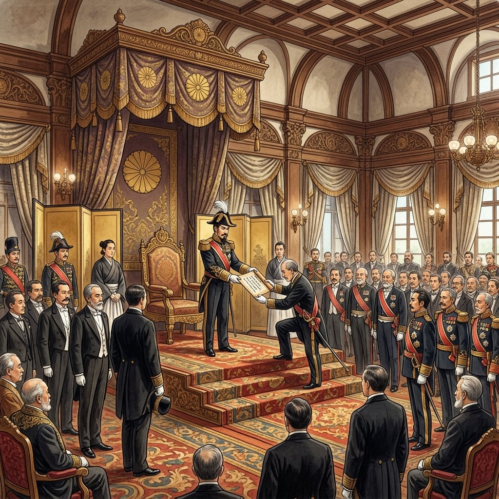

24. 大日本帝国憲法の制定と条約改正
10年後に国会を開くことを約束した明治新政府は、欧米に対抗できる国づくりの総仕上げとして、憲法の制定と国会の開設を急ぎました。また、長年の課題であった「不平等条約の改正」という悲願を果たす戦いも始まりました。今回は、日本初の近代憲法である「大日本帝国憲法」の仕組みと、条約改正を成し遂げた二人の外相のドラマを解説します！
1. 大日本帝国憲法（だいにっぽんていこくけんぽう）の制定
政府は、日本の近代国家としての枠組みをつくるため、まずは内閣制度を創設し（1885年）、初代内閣総理大臣に伊藤博文（いとうひろぶみ）が就任しました。伊藤は憲法案をつくる中心人物となりました。
① プロイセン（ドイツ）の憲法を手本に
伊藤博文はヨーロッパへ渡り、各国の憲法を調査しました。その中で、君主（皇帝）の権限が非常に強く、議会の力が抑えられているプロイセン（ドイツ）の憲法を手本にすることに決めました。これは、日本でも天皇を中心とする強い政府をつくりたかったためです。
政府は、民間の運動家たちがつくった基本的人権を重視する草案（私擬憲法）を完全に無視し、極秘裏に憲法づくりを進めました。
② 憲法の発布（1889年2月11日）
1889年2月11日、大日本帝国憲法が発布されました。これは、天皇が国民に恵み与える形をとる欽定憲法（きんていけんぽう）でした。

図1：黒田清隆首相に対し、天皇から憲法が手渡される「大日本帝国憲法発布式」のイメージ
① 大日本帝国憲法の特徴
- 天皇主権：国の最高権力（主権）は天皇にありました。
- 天皇の大権：陸海軍の指揮権（統帥権）や宣戦布告、条約の締結などは、議会の承認を必要としない天皇独自の権限とされました。
- 臣民（しんみん）の権利：国民は「臣民（天皇の赤子）」と位置づけられ、言論や信教、結社の自由などの人権は、「法律の範囲内」でのみ認められました。
2. 帝国議会の開設と「最初の選挙」
憲法ができた翌年の1890年、日本初の国会である帝国議会（ていこくぎかい）が開かれました。
議会は、皇族や華族、多額納税者などからなる話し合い機関の貴族院（きぞくいん）と、有権者の選挙で選ばれた議員からなる衆議院（しゅうぎいん）の二つから構成されました（二院制）。
① 最初の衆議院議員選挙の条件
1890年に行われた第1回衆議院議員総選挙では、投票できる国民（有権者）に極めて厳しい条件が設けられていました。これもテストで非常によく問われます！
「直接国税を15円以上納める、25歳以上の男子」
※この厳しい条件に当てはまったのは、当時の富裕な地主や豪農などに限られており、全人口のわずか約1.1%にすぎませんでした（女性や貧しい人々には一切選挙権はありませんでした）。
3. 悲願！不平等条約の改正
明治政府にとって、幕末に結ばれた「領事裁判権の容認」と「関税自主権の欠如」という不平等条約を改正することは、欧米と肩を並べるための悲願の国家目標でした。この目標を成し遂げた二人の外務大臣の功績を整理しましょう。
| 担当した外相 | 達成した年 | 改正の内容とポイント |
|---|---|---|
| 陸奥宗光 （むつむねみつ） |
1894年 （日清戦争の直前） |
領事裁判権（治外法権）の撤廃に成功。 イギリスとの間で日英通商航海条約を調印しました。日本国内で罪を犯した外国人を、日本の法律で裁けるようになりました。 |
| 小村寿太郎 （こむらじゅたろう） |
1911年 （日露戦争の後） |
関税自主権の完全回復に成功。 輸入品にかける税率を日本が自主的に決められるようになり、ついに半世紀に及んだ不平等条約がすべて解消されました。 |
※これらの改正が成功した背景には、日本が近代憲法や法制度を整え、日清・日露戦争で勝利したことで、欧米諸国から「対等な文明国」として実力を認められたことがありました。
🔥 この単元のテスト対策・暗記のコツ
-
★
憲法制定の人物と手本：
・中心人物は伊藤博文。
・手本にしたのはプロイセン（ドイツ）の憲法。理由は「君主（天皇）の権限が強い憲法を求めたから」です。 -
★
大日本帝国憲法（1889年）と最初の選挙（1890年）の年号：
・1889年発布：「いや早く（1889）発布だ帝国憲法」
・1890年衆議院選挙：「いや丸（1890）く収まる初選挙」 -
★
最初の有権者条件（100%暗記！）：
・記述・空欄補充で絶対に出ます。「直接国税を15円以上納める、25歳以上の男子」（全人口の約1.1%）という条件は丸暗記しましょう。 -
★
条約改正の二人の外相のペア（超頻出）：
・陸奥宗光：領事裁判権の撤廃（1894年）（日英通商航海条約）
・小村寿太郎：関税自主権の回復（1911年）
・「むっつり（陸奥）裁判に勝つ」「小（小村）さい関税」と関連付けて頭に入れましょう。